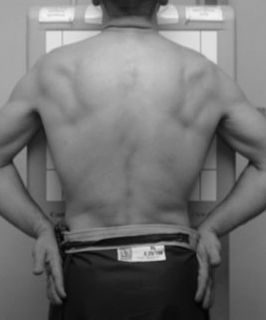

Chest(PA)
Centering point:Directed to the midsaggital plane at the level of T7
Perpendicular to the IR

Cassette Size:35cm x 43cm (14 x 17 ins)
Landscape usually, but may be portrait depending on body habitus
Exposure Factors:75kVp on
32MaS
FFD:180cm
Bucky/Grid:Moving or Stationary Grid
Film / Screen:Regular
Collimation:Centre: T7, or the inferior border of the scapula
Shutter A: Open to approximately 5cm (2 inches) above the shoulder to include upper airway
Shutter B: Open to the level of the acromioclavicular joints (AC joints) laterally. This will include the lung fields laterally.
Pathologies:Pleural effusions, pneumothorax, signs of infection, masses, nodules, atelectasis, Hypertension, Chest pain, Bronchiectasis, Cardiovascular accident(CVA)
Position of patient and cassette
- Patient erect, standing or seated, facing the bucky
- Arms relaxed at the sides
-
Centre the midsaggital plane of the patient to the midline of the IR
- Have the patient relax their shoulders and rolled forward to touch the bucky
- Adjust the height of the bucky so that the upper border of the IR is 5cm (2 inches) above the shoulders
- Raise the chin and rest on or above the bucky
- Clear the scapulae off the lung fields by getting the patient to either
Critique:
- No rotation as evidenced by
-
the medial ends of the clavicles equidistant from the spine
-
the clavicles are in the same horizontal plane
- The lungs fields are clear of the scapulae
-
The 10th posterior ribs will be visualised above the diaphragm on full inspiration
-
Area Covered
Lungs fields, apices, costophrenic angles, heart
-
Collimation
- Centre: T7 Thoracic vertebra
-
Shutter A: Open to show the lung apices superiorly and the costophrenic angles inferiorly
- Shutter B: Open to show the lung fields laterally
-
Exposure
- the ribs and thoracic vertebrae are seen faintly through the heart
- vascular lungs markings are shown